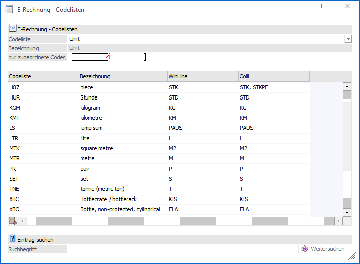
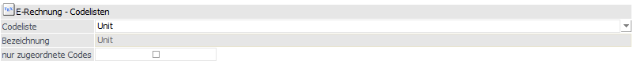
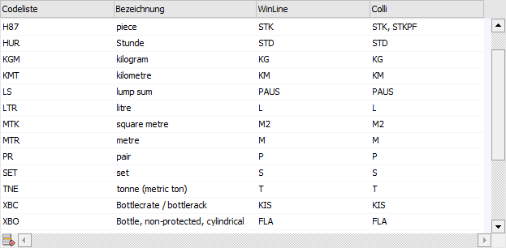
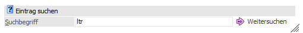
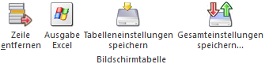
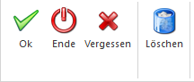
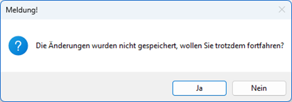

Im Menüpunkt…
1 WinLine FIBU / FAKT
1 Stammdaten
1 Belegaustausch
1 E-Rechnung - Codelisten
… stehen die Codelisten, die u. a. für die E-Rechnungsformate "ZUGFeRD/Factur-X" und "XRechnung" relevant sind, zur Verfügung. Zudem können auch neue bzw. eigene Codelisten angelegt werden.
Die einzelnen Codelisten enthalten eine Auflistung von Codes und ihrer Namen, die im europäischen eInvoicing-Standard zulässig sind. Die in der WinLine enthaltenen Codelisten ersetzen dabei nicht die offiziell veröffentlichten Codelisten, die z. T. detailliertere Informationen und Definitionen enthalten.
Welche Codes in bestimmten Geschäftsfällen relevant sind, basiert auf den offiziellen Codelisten in Verbindung mit der entsprechenden Spezifikation des eInvoicing-Standards "EN 16931-1".
Die einzelnen Codes bilden weltweit eindeutige Kennungen für unterschiedliches Daten ab. Solche Daten können z. B. Kreditoren- und Artikelkennungen, Verkaufs-/Maßeinheiten (Colli), Zahlungsarten usw. sein. Für all diese Bereiche stehen entsprechende Codelisten mit den darin enthaltenen Codes zur Verfügung.
Beispiel
Die Verkaufseinheit "Stück", die bei jedem Unternehmen unterschiedlich auf den Belegen angedruckt werden kann ("Stück", "Stck", "STK", "ST"…), d.h. all diese Angaben sind nicht einheitlich.
Aus diesem Grund existiert u. a. für Verpackungs- und Verkaufseinheiten die Codeliste "Unit". Dort wird die Einheit Stück (engl. "piece") mit dem Code "H87" definiert. Dadurch ist für jeden Empfänger eines E-Belegs klar, dass mit dem Code "H87" die Maßeinheit "Stück" übermittelt wird.
Erst durch die fest definierten Normwerte bzw. Codes wird in weiterer Folge eine automatisierte Verarbeitung des Belegs ermöglicht.
Die Codelisten in der WinLine können zudem als "Übersetzungstabelle" für den Import von E-Belegen betrachtet werden. Dadurch können während des Importvorgangs die in der XML übermittelten Codes in die entsprechenden WinLine Daten "übersetzt" werden. Z. B. der Code "H87", welcher den Colli "Stück" darstellt. Dieser wiederum kann in jeder WinLine Installation unternehmensspezifisch mit einem anderen Kürzel angelegt worden sein kann.
Mit der Hinterlegung des entsprechenden Colli in der Zeile "piece" bzw. "H87" wird eine Verknüpfung zum entsprechenden Colli in der WinLine hergestellt.
Die Liste wird in der WinLine lediglich für den Import herangezogen. Für den Export können die Listen als Informationsquelle genutzt werden.
Die Codelisten sind mandantenübergreifend und stehen für verschiedene Bereiche u.a. für Colli, Währungen, Steuerzeilen, Zahlungsarten (z. B. Überweisung, Lastschrift, PayPal etc.) zur Verfügung.
Die Definition/Zuweisung der Codeliste für den Import von XML-Belegen muss manuell im entsprechenden XML-tag in den Importvorlagen erfolgen.

E-Rechnung – Codelisten

Ø Codeliste
Hier kann eine bestehende Liste ausgewählt oder eine neue Liste angelegt werden.
Ø Bezeichnung
Anzeige/Hinterlegung der Bezeichnung für die Codeliste.
Ø Nur zugeordnete Codes
Bei Aktivierung dieser Checkbox werden in der Bildschirmtabelle nur die Einträge bzw. Codes angezeigt, bei denen in der Spalte "WinLine" ein Eintrag hinterlegt wurde.
Codeliste

Ø Codeliste
Die einzelnen Codes der entsprechenden Codeliste. Diese Codes werden in der XML-Datei übermittelt.
Ø Bezeichnung
Hier stehen die engl. Bezeichnungen der Codes, welche auch geändert werden können.
Ø WinLine
In dieser Spalte wird der entsprechende WinLine Datensatz hinterlegt, z. B. ein Colli aus dem Colli-Stamm "STK", der an dieser Stelle dem Code "H87" der Codeliste "Unit" zugewiesen wird. In der Codeliste "Unit" steht an dieser Stelle ein Matchcode auf den Colli-Stamm zur Verfügung.
Ø Colli
Diese Spalte wird lediglich in der Codeliste "Unit" eingeblendet und zeigt die Colli aus dem Colli-Stamm an, bei denen der Wert aus der Spalte "Codeliste" hinterlegt wurde.
Eintrag suchen

Ø Suchbegriff
Der erfasste Suchbegriff wird in allen Spalten (Codeliste, Bezeichnung und WinLine) gesucht. Die Suche schränkt nicht die Tabelle ein, sondern es wird innerhalb der Tabelle der Eintrag gesucht.
Ø Weitersuchen
Über den Button wird der nächste Treffer des Suchbegriffs angezeigt.
Tabellenbuttons

Ø Entfernen
Durch Anwählen des Buttons ENTFERNEN kann ein Eintrag aus der Codeliste entfernt werden
Ø Ausgabe Excel
Durch Anwahl des Buttons "Ausgabe Excel" wird der Inhalt der Tabelle nach Microsoft Excel übergeben.
Ø Tabelleneinstellungen speichern
Die Spalten einer Tabelle können grundsätzlich an beliebige Positionen verschoben, bzw. in der Breite entsprechend angepasst werden. Durch Anwahl des Buttons "Tabelleneinstellungen speichern" werden die Einstellungen benutzerspezifisch gespeichert und bei dem nächsten Aufruf des Programmpunktes wieder vorgeschlagen.
Ø Gesamteinstellungen speichern
Im Gegensatz zu "Tabelleneinstellungen speichern" können mit "Gesamteinstellungen speichern" mehrere Tabellenaufbauten gespeichert und nach Wunsch geladen werden. Zusätzlich werden Sonderfunktionen der Tabelle (z.B. "Spalte gruppieren") ebenfalls bei der Speicherung bedacht.
Buttons

Ø OK
Durch Anklicken des OK-Buttons werden vorgenommene Änderungen gespeichert.
Ø Ende
Durch Anklicken des ENDE-Buttons wird das Fenster geschlossen.
Ø Vergessen
Die Änderungen werden verworfen und nicht gespeichert. Es wird vorher eine Hinweismeldung ausgegeben, dass die Änderungen noch nicht gespeichert wurden. Erst bei Bestätigung mit "Ja" werden diese tatsächlich verworfen.

Ø Löschen
Durch Anklicken des Buttons wird die gesamte Codeliste gelöscht.
Hinweis
Die im Standard ausgelieferten Codelisten sollten nicht gelöscht werden.